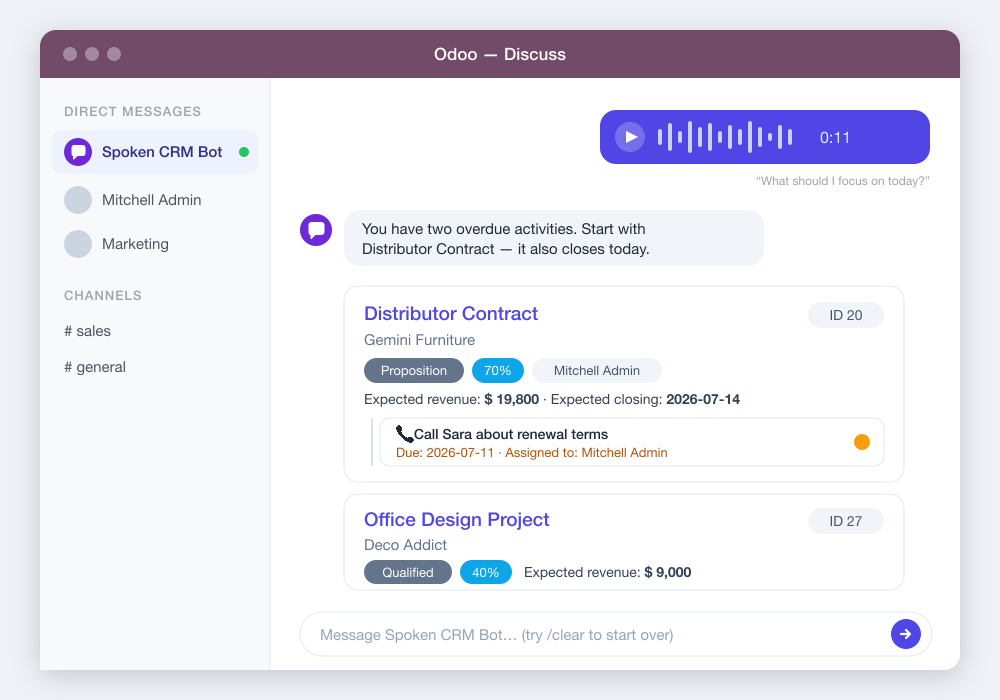

Spoken CRM
An AI assistant for Odoo 18 that lives in Discuss. Your team reads and updates the CRM through natural conversation — typed or spoken — right where they already chat.

What it does
- Chat & voice — type or send a voice note; audio is transcribed automatically and the bot replies in your language (English and Spanish included).
- Real CRM actions — search and rank opportunities, create and update deals and contacts, schedule activities and mark them done, log notes — rendered as rich clickable cards.
- Proactive nudges — the bot reviews each enrolled user's pipeline morning and afternoon, in their own timezone, and DMs a heads-up when something needs attention.
- MCP server — an optional read-only endpoint (OAuth 2.1 + PKCE) lets external AI clients like claude.ai query your pipeline, limited to admin-approved fields.
- Permission-safe — every action runs as the requesting user; Odoo access rights and record rules always apply.
- Private by design — your own Anthropic/OpenAI API keys, no telemetry, nothing sent to the module author.
$199 one-time, per Odoo instance
For Odoo 18 — Community and Enterprise.
Get it on the Odoo App StoreRequires an Anthropic or OpenAI API key. Voice notes use OpenAI Whisper.